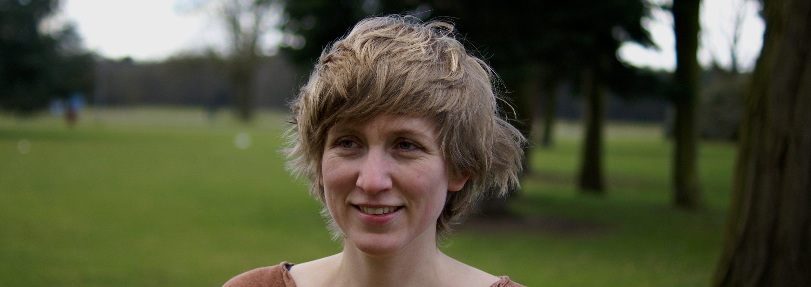

Professor of Semantics and Philosophy of Language
Head of the Department for the Philosophy Mind and Language
Coordinator of the Research Center for Cognition, Culture and Language
Radboud University Nijmegen
Contact:
E-mail: corien.bary (at) ru.nl
Visiting Address:
Erasmusgebouw, Room 16.12
Erasmusplein 1
Nijmegen
Postal Address:
Faculty of Philosophy, Theology and Religious Studies
Radboud University Nijmegen
PO Box 9103
6500 HD Nijmegen
The Netherlands
